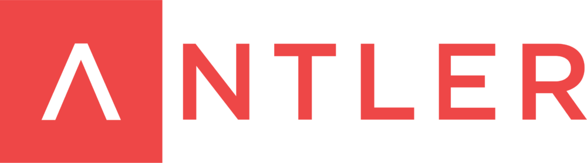

Previous Experience
|  |
EntrepreneurAntler / 2020 |
Antler is a startup generator and early stage VC that invests in exceptional people to build the next wave of tech companies. ~2,000 people applied to Cohort 3 of Antler Sydney and ~95 people secured a spot - of which I was one!
Key Learnings:
1. High-Def Web / UI Design in Sketch (on Mac)
2. Preparing Pitch Decks for Investors
3. Validating Business Ideas
4. Investor-Focussed Financial Modelling
Product ManagerZip Co / 2019 - 2020 |
Key Accomplishments:
1. Setup user research function and strategy and executed upon it - incl. research initiatives in to consumer engagement and acquisition
2. Conceptualised a Gift Card Marketplace product @ Zip, pulled together a team, built an MVP within 36hrs in an internal hackathon, won 3rd place, launched to the Zip customer base (the only hackathon initiative to do so) resulting in a product that is within the top 5 highest grossing channels of revenue at Zip
3. Wrote a white-paper on the Acceptance Problem that led to transformational change within the business
4. Managed development of the Pocketbook Affiliate Rewards project, launched it to staff and then an alpha group of customers, gathered feedback through surveys and interviews and produced deliverables from the results of these for management
5. Performed a tonne of ideation around Pocketbook and created a backlog of initiatives that the team is still working through
6. Did some BA (business analyst) work on Pocketbook v2.0 (complete front-end refresh)
Head of Growth ProjectsZip Co / 2017 - 2018 |
Key Accomplishments:
1. Contributed to definition of growth & innovation strategy at Zip
2. Conducted discovery with many partners (in FinTech and Banking) to uncover potential strategic opportunities
3. Involved in due diligence, discovery and assessment of potential acquisitions
4. Ran an RFP to replace Zip's payment gateway (assessing, to quite some depth, almost the entire card payments ecosystem within AU)
5. Built business cases and financial models for core growth initiatives and pitched these to leadership and the board
6. Performed research on the acceptance problem at Zip (how we might increase acceptance of Zip amongst AU businesses) which led to the Shop Everywhere initiative. Scoped out many alternative solutions for this initiative which involved a lot of partnership discussions w/ technical and commercial elements. Potential solutions included - (i) Become a scheme issuer + integrate w/ a processor; (ii) Obtain BIN sponsorship from a bank + integrate w/ a processor; (iii) Integrate w/ a Card Programme Manager. Landed on option 3, selected a partner and ran technical scoping and feasibility studies + commercial negotiation. Finalised contract before handing over to product for execution
7. Did a tonne of ideation and early stage assessment of both my and other's ideas
8. Created a number of prototypes of alternative solutions to the acceptance problem incl. QR code for in-store acceptance - some solo and others in partnership with the technology team at Zip AND big-four financial institutions
9. Involved in early work to discover and assess potential commercialisation opportunities for Pocketbook
10. Did a bunch of business development work - opening doors for Zip in to tolls and transport
Head of Sales EngineeringZip Co / 2017 |
Key Accomplishments:
1. Managed two direct reports - one that I hired
2. Continued with sales engineering and integration duties, supporting the pre-sales efforts and delivery of integrations with many major AU brands including – Michael Hill Jewellers, Mitre 10, Beacon Lighting, Kathmandu, Anaconda, Best & Less, Australian Geographic, The Co-Op Bookstore, Sanity, Trip-A-Deal, Wittner Shoes and over 40 SMB and Mid-Market opportunities – with a very high collective turnover
3. Owned and was the subject matter expert for our in-store POS and terminal integration strategy
4. Was part of a team of three that responded to a major tender for a billion-dollar retail group (Super Retail Group). I put together the written response for technical solution / architecture, project management and risk management – and pitched these areas face-to-face to the client, culminating with us winning the tender
5. Developed and introduced team process to improve efficiency and professionalism of approach and formulated and executed a training and mentorship program for my direct reports and for the SMB engineers
6. Regularly travelled both within and inter-state to support pre-sales and integration efforts onsite with our clients
Sales EngineerZip Co / 2016 - 2017 |
Key Accomplishments:
1. Built many direct integrations myself on behalf of clients and also acted in a consultative capacity for larger integration projects. Amongst these projects were - Catch of the Day, Forever New, WebJet Exclusives, Adairs, Harris Farm, Cheap as Chips, PLE Computers, PC CaseGear + over 120 SMB and mid-market opportunities – all with a very high collective turnover
2. Re-engineered the team’s responsibilities and process from one where most integrations were done directly by the team (for smaller merchants) to one where we took on pre-sales consultative responsibilities for larger enterprise and channel merchants. To support this, I built out professional-looking pre-sales artefacts – such as technical proposals and technical pre-sales presentations, that went on to be used in the day to day duties of all team members
3. Took on a number of coding projects including the development of two developer API playgrounds, a tool to increase efficiency of PCEFTPOS in-store roll-outs and participated in the testing and delivery of our new merchant API
4. Got the opportunity to shadow our founders (Larry and Pete) to a number of investor pitches / meetings and see them in action
Pre-Sales ConsultantPayPal / 2014 - 2016 |
Key Accomplishments:
1. Acted in a pre-sales capacity across many enterprise and channel integrations incl. government and insurance
2. Supported integration for many clients incl. AMF Bowling, Intuit Quickbooks Online, Flight Centre and many more
3. Designed a process to build point and click prototypes for pre-sales and rolled this out to the team
4. Key member of a team that built a payments wristband solution that was piloted at Splendour in the Grass. Coded up portions of the system, supported the technology in field and undertook user research to discover demand for this product. Also down as one of the four inventors of the technology on a provisional patent
5. Participated in PayPal's Battlehack Hackathon as a Payments Consultant and Mentor
6. Presented at a number of partner events on PayPal payments technology and the payments industry more generally
7. Developed a deep understanding of AU and Global payments technology (Cards, DE, BECS, Central Banking incl. RBA + RITS, FX, etc...)
8. Regularly travelled both within and inter-state to support pre-sales and integration efforts onsite with our clients
Senior Business Analyst & Delivery ManagerGrays eCommerce Group (GraysOnline) / 2011 - 2014 |
Key Accomplishments:
1. Managed one other direct report (another business analyst). Split project load 50/50, I took half the projects and gave the other half to him (so that we wouldn't step on each other's toes). We were each responsible for all non-engineering aspects of each of our assigned projects
2. Involved in the hiring process of many software engineers for our team - from more of a consulting capacity
3. Managed development and launch of the Grays Reward & Gift Card Platform, including doing the solution architecture and pitch to and actual migration from a SaaS solution to an in-house solution saving us upward of $20k / year
4. Managed development and launch of our PayPal Integration (after strong customer demand via CS channels)
5. Managed development and launch of our Adobe Analytics and Test & Target Integrations (to replace Site Intelligence and Optimost)
6. Worked with a firm (each year) that we contracted to in order to consolidate information for our R&D Tax Concession
7. Re-engineered team process to optimise efficiency and speed of delivery
8. Built business case for and managed development and launch of our new Help Centre (based on Salesforce) - saving us upward of $15k per year
9. Project/portfolio management incl. resource allocation, scheduling and regular updates to management (following PMBOK standard)
10. Followed BABOK standard for most of my business analyst activities
Business AnalystGrays eCommerce Group (GraysOnline) / 2009 - 2011 |
Key Accomplishments:
1. Managed specification of a variety of small projects
2. Managed specification and day to day leadership for development of the GraysOutlet website - our entry in to the sale of fast moving consumer goods online using buy now (as opposed to auction)
3. Managed integration and launch of Optimost for A/B & Multivariate testing
4. Managed integration and launch of Site Intelligence web analytics platform
5. Managed integration and launch of Alterian marketing data warehouse
6. Supported QA and testing for all of the projects
Project Manager & BDMGrays eCommerce Group (GraysOnline) / 2008 - 2009 |
Key Accomplishments:
1. Catalogued assets of companies out in the field that had gone insolvent or were otherwise conducting asset disposal programmes
2. Undertook business development to find clients with industrial or commercial goods that they wanted to dispose of (some warm leads, some cold)
3. Project managed asset disposal for Kleenmaid following insolvency (incl. logistics, cataloguing, sale, customer support and more)
4. Project managed asset disposal for ECP Australia following insolvency (incl. logistics, cataloguing, sale, customer support and more)
5. Attended many networking events with insolvency practitioners and accountants working in this industry
6. Re-engineered an archaic fax marketing process
7. Built a process around our strategy of targeting local councils throughout NSW looking to dispose of their plant and equipment (pad-foot rollers, excavators, etc)
8. Managed a competitor analysis programme